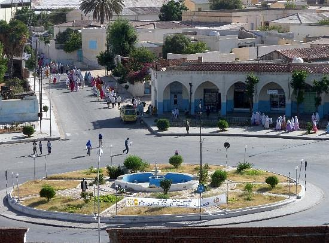

ERICORAL
Most Beautiful Places
Eritrea is a northeast African country on the Red Sea coast. It shares borders with Ethiopia, Sudan and Djibouti. The capital city, Asmara, is known for its Italian colonial buildings, like St. Joseph's Cathedral, as well as art deco structures. Italian, Egyptian and Turkish architecture in Massawa reflect the port city's colorful history. Notable buildings here include St. Mariam Cathedral and the Imperial Palace.
- Capital: Asmara
- Population: 6 million (2016) World Bank
- Continent: Africa
- Currency: Eritrean nakfa
- Government: Presidential system


Ethnic In Eritrea
There are nine officially recognized ethnic groups in Eritrea, Afar, Blien, Hidareb, Kunama, Nara, Rashaida, Saho, Tigre and Tigrinya. The current population of Eritrea is between 4.4 and 5.9 million, and there are at least 4 indigenous peoples.